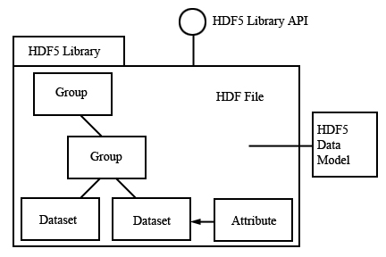
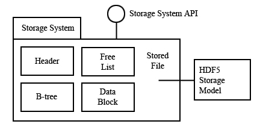
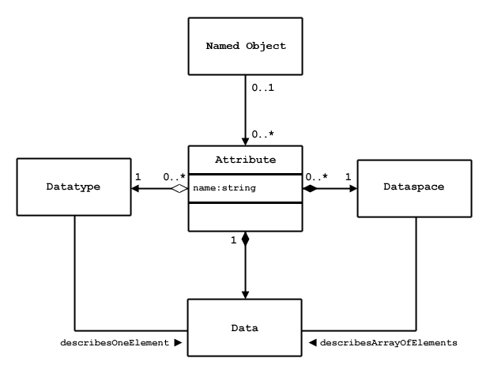

a) Newly created file: one group,
/b) Create a dataset called
/dset1(
HDcreate(..., “/dset2”, ...)The Hierarchical Data Format (HDF) implements a model for managing and storing data. The model includes an abstract data model and an abstract storage model (the data format), and libraries to implement the abstract model and to map the storage model to different storage mechanisms. The HDF5 library provides a programming interface to a concrete implementation of the abstract models. The library also implements a model of data transfer, i.e., efficient movement of data from one stored representation to another stored representation. The figure below illustrates the relationships between the models and implementations. This chapter explains these models in detail.
|
|
|
Figure 1. HDF5 models and implementations
|
The Abstract Data Model is a conceptual model of data, data types, and data organization. The abstract data model is independent of storage medium or programming environment. The Storage Model is a standard representation for the objects of the abstract data model. The HDF5 File Format Specification defines the storage model.
The Programming Model is a model of the computing environment and includes platforms from small single systems to large multiprocessors and clusters. The programming model manipulates (instantiates, populates, and retrieves) objects from the abstract data model.
The Library is the concrete implementation of the programming model. The Library exports the HDF5 APIs as its interface. In addition to implementing the objects of the abstract data model, the Library manages data transfers from one stored form to another. Data transfer examples include reading from disk to memory and writing from memory to disk.
Stored Data is the concrete implementation of the storage model. The storage model is mapped to several storage mechanisms including single disk files, multiple files (family of files), and memory representations.
The HDF5 Library is a C module that implements the programming model and abstract data model. The HDF5 Library calls the operating system or other storage management software (e.g., the MPI/IO Library) to store and retrieve persistent data. The HDF5 Library may also link to other software such as filters for compression. The HDF5 Library is linked to an application program which may be written in C, C++, Fortran, or Java. The application program implements problem specific algorithms and data structures and calls the HDF5 Library to store and retrieve data. The figure below shows the dependencies of these modules.
|
|
|
Figure 2. The library, the application
program, and other modules
|
It is important to realize that each of the software components manages data using models and data structures that are appropriate to the component. When data is passed between layers (during storage or retrieval), it is transformed from one representation to another. The figure below suggests some of the kinds of data structures used in the different layers.
The Application Program uses data structures that represent the problem and algorithms including variables, tables, arrays, and meshes among other data structures. Depending on its design and function, an application may have quite a few different kinds of data structures and different numbers and sizes of objects.
The HDF5 Library implements the objects of the HDF5 abstract data model. Some of these objects include groups, datasets, and attributes. The application program maps the application data structures to a hierarchy of HDF5 objects. Each application will create a mapping best suited to its purposes.
The objects of the HDF5 abstract data model are mapped to the objects of the HDF5 storage model, and stored in a storage medium. The stored objects include header blocks, free lists, data blocks, B-trees, and other objects. Each group or dataset is stored as one or more header and data blocks. See the HDF5 File Format Specification for more information on how these objects are organized. The HDF5 Library can also use other libraries and modules such as compression.
|
  |
|
Figure 3. Data structures in different layers
|
The important point to note is that there is not necessarily any simple correspondence between the objects of the application program, the abstract data model, and those of the Format Specification. The organization of the data of application program, and how it is mapped to the HDF5 abstract data model is up to the application developer. The application program only needs to deal with the library and the abstract data model. Most applications need not consider any details of the HDF5 File Format Specification or the details of how objects of abstract data model are translated to and from storage.
The abstract data model (ADM) defines concepts for defining and describing complex data stored in files. The ADM is a very general model which is designed to conceptually cover many specific models. Many different kinds of data can be mapped to objects of the ADM, and therefore stored and retrieved using HDF5. The ADM is not, however, a model of any particular problem or application domain. Users need to map their data to the concepts of the ADM.
The key concepts include:
These key concepts are described in more detail below.
Abstractly, an HDF5 file is a container for an organized collection of objects. The objects are groups, datasets, and other objects as defined below. The objects are organized as a rooted, directed graph. Every HDF5 file has at least one object, the root group. See the figure below. All objects are members of the root group or descendents of the root group.
|
| |||
|
|||
|
Figure 4. The HDF5 file
|
HDF5 objects have a unique identity within a single HDF5 file and can be accessed only by its names within the hierarchy of the file. HDF5 objects in different files do not necessarily have unique identities, and it is not possible to access a permanent HDF5 object except through a file. See the section “The Structure of an HDF5 File” below for an explanation of the structure of the HDF5 file.
When the file is created, the file creation properties specify settings for the file. The file creation properties include version information and parameters of global data structures. When the file is opened, the file access properties specify settings for the current access to the file. File access properties include parameters for storage drivers and parameters for caching and garbage collection. The file creation properties are set permanently for the life of the file, and the file access properties can be changed by closing and reopening the file.
An HDF5 file can be “mounted” as part of another HDF5 file. This is analogous to Unix file system mounts. The root of the mounted file is attached to a group in the mounting file, and all the contents can be accessed as if the mounted file were part of the mounting file.
An HDF5 group is analogous to a file system directory. Abstractly, a group contains zero or more objects, and every object must be a member of at least one group. The root group is a special case; it may not be a member of any group.
Group membership is actually implemented via link objects. See the figure below. A link object is owned by a group and points to a named object. Each link has a name, and each link points to exactly one object. Each named object has at least one and possibly many links to it.
|
|
|
Figure 5. Group membership via link objects
|
There are three classes of named objects: group, dataset, and named datatype. See the figure below. Each of these objects is the member of at least one group, and this means there is at least one link to it.
|
|
|
Figure 6. Classes of named objects
|
An HDF5 dataset is a multidimensional (rectangular) array of data elements. See the figure below. The shape of the array (number of dimensions, size of each dimension) is described by the dataspace object (described in the next section below).
A data element is a single unit of data which may be a number, a character, an array of numbers or characters, or a record of heterogeneous data elements. A data element is a set of bits. The layout of the bits is described by the datatype (see below).
The dataspace and datatype are set when the dataset is created, and they cannot be changed for the life of the dataset. The dataset creation properties are set when the dataset is created. The dataset creation properties include the fill value and storage properties such as chunking and compression. These properties cannot be changed after the dataset is created.
The dataset object manages the storage and access to the data. While the data is conceptually a contiguous rectangular array, it is physically stored and transferred in different ways depending on the storage properties and the storage mechanism used. The actual storage may be a set of compressed chunks, and the access may be through different storage mechanisms and caches. The dataset maps between the conceptual array of elements and the actual stored data.
|
|
|
Figure 7. The dataset
|
The HDF5 dataspace describes the layout of the elements of a multidimensional array. Conceptually, the array is a hyper-rectangle with one to 32 dimensions. HDF5 dataspaces can be extendable. Therefore, each dimension has a current size and a maximum size, and the maximum may be unlimited. The dataspace describes this hyper-rectangle: it is a list of dimensions with the current and maximum (or unlimited) sizes. See the figure below.
|
|||
|
Figure 8. The dataspace |
Dataspace objects are also used to describe hyperslab selections from a dataset. Any subset of the elements of a dastaset can be selected for read or write by specifying a set of hyperslabs. A non-rectangular region can be selected by the union of several (rectangular) dataspaces.
The HDF5 datatype object describes the layout of a single data element. A data element is a single element of the array; it may be a single number, a character, an array of numbers or carriers, or other data. The datatype object describes the storage layout of this data.
Data types are categorized into 11 classes of datatype. Each class is interpreted according to a set of rules and has a specific set of properties to describe its storage. For instance, floating point numbers have exponent position and sizes which are interpreted according to appropriate standards for number representation. Thus, the datatype class tells what the element means, and the datatype describes how it is stored.
The figure below shows the classification of datatypes. Atomic datatypes are indivisible. each may be a single object; a number, a string, or some other objects. Composite datatypes are composed of multiple elements of atomic datatypes. In addition to the standard types, users can define additional datatypes such as a 24-bit integer or a 16-bit float.
A dataset or attribute has a single datatype object associated with it. See Figure 7 above. The datatype object may be used in the definition of several objects, but by default, a copy of the datatype object will be private to the dataset.
Optionally, a datatype object can be stored in the HDF5 file. The datatype is linked into a group, and therefore given a name. A named datatype can be opened and used in any way that a datatype object can be used.
The details of datatypes, their properties, and how they are used are explained in the “HDF5 Datatypes” chapter.
|
|
|
Figure 9. Datatype classifications
|
Any HDF5 named data object (group, dataset, or named datatype) may have zero or more user defined attributes. Attributes are used to document the object. The attributes of an object are stored with the object.
An HDF5 attribute has a name and data. The data portion is similar in structure to a dataset: a dataspace defines the layout of an array of data elements, and a datatype defines the storage layout and interpretation of the elements See the figure below .
|
 |
|
Figure 10. Attribute data elements
|
In fact, an attribute is very similar to a dataset with the following limitations:
Note that the value of an attribute can be an object reference. A shared attribute or an attribute that is a large array can be implemented as a reference to a dataset.
The name, dataspace, and datatype of an attribute are specified when it is created and cannot be changed over the life of the attribute. An attribute can be opened by name, by index, or by iterating through all the attributes of the object.
HDF5 has a generic property list object. Each list is a collection of name-value pairs. Each class of property list has a specific set of properties. Each property has an implicit name, a datatype, and a value. See the figure below. A property list object is created and used in ways similar to the other objects of the HDF5 library.
Property Lists are attached to the object in the library, they can be used by any part of the library. Some properties are permanent (e.g., the chunking strategy for a dataset), others are transient (e.g., buffer sizes for data transfer). A common use of a Property List is to pass parameters from the calling program to a VFL driver or a module of the pipeline.
Property lists are conceptually similar to attributes. Property lists are information relevant to the behavior of the library while attributes are relevant to the user’s data and application.
|
|||||||||
|
Figure 11. The property list
|
Property lists are used to control optional behavior for file creation, file access, dataset creation, dataset transfer (read, write), and file mounting. Some property list classes are shown in the table below. Details of the different property lists are explained in the relevant sections of this document.
| Table 1. Property list classes and their usage | ||
| Property List Class | Used | Examples |
H5P_FILE_CREATE |
Properties for file creation. | Set size of user block. |
H5P_FILE_ACCESS |
Properties for file access. | Set parameters for VFL driver. An example is MPI I/O. |
H5P_DATASET_CREATE |
Properties for dataset creation. | Set chunking, compression, or fill value. |
H5P_DATASET_XFER |
Properties for raw data transfer (read and write). | Tune buffer sizes or memory management. |
H5P_FILE_MOUNT |
Properties for file mounting. | |
This section is under construction.
The HDF5 File Format Specification defines how HDF5 objects and data are mapped to a linear address space. The address space is assumed to be a contiguous array of bytes stored on some random access medium.1 The format defines the standard for how the objects of the abstract data model are mapped to linear addresses. The stored representation is self-describing in the sense that the format defines all the information necessary to read and reconstruct the original objects of the abstract data model.
The HDF5 File Format Specification is organized in three parts:
The Level 0 specification defines the header block for the file. Header block elements include a signature, version information, key parameters of the file layout (such as which VFL file drivers are needed), and pointers to the rest of the file. Level 1 defines the data structures used throughout the file: the B-trees, heaps, and groups. Level 2 defines the data structure for storing the data objects and data. In all cases, the data structures are completely specified so that every bit in the file can be faithfully interpreted.
It is important to realize that the structures defined in the HDF5 file format are not the same as the abstract data model: the object headers, heaps, and B-trees of the file specification are not represented in the abstract data model. The format defines a number of objects for managing the storage including header blocks, B-trees, and heaps. The HDF5 File Format Specification defines how the abstract objects (for example, groups and datasets) are represented as headers, B-tree blocks, and other elements.
The HDF5 Library implements operations to write HDF5 objects to the linear format and to read from the linear format to create HDF5 objects. It is important to realize that a single HDF5 abstract object is usually stored as several objects. A dataset, for example, might be stored in a header and in one or more data blocks, and these objects might not be contiguous on the hard disk.
The HDF5 file format defines an abstract linear address space. This can be implemented in different storage media such as a single file or multiple files on disk or in memory. The HDF5 Library defines an open interface called the Virtual File Layer (VFL). The VFL allows different concrete storage models to be selected.
The VFL defines an abstract model, an API for random access storage, and an API to plug in alternative VFL driver modules. The model defines the operations that the VFL driver must and may support, and the plug-in API enables the HDF5 Library to recognize the driver and pass it control and data.
A number of VFL drivers have been defined in the HDF5 Library. Some work with a single file, and some work with multiple files split in various ways. Some work in serial computing environments, and some work in parallel computing environments. Most work with disk copies of HDF5 files, but one works with a memory copy. These drivers are listed in the table in the “Alternate File Storage Layouts and Low-level File Drivers” section in “The File” chapter.
Each driver isolates the details of reading and writing storage so that the rest of the HDF5 Library and user program can be almost the same for different storage methods. The exception to this rule is that some VFL drivers need information from the calling application. This information is passed using property lists. For example, the Parallel driver requires certain control information that must be provided by the application.
An HDF5 file is organized as a rooted, directed graph. Named data objects are the nodes of the graph, and links are the directed arcs. Each arc of the graph has a name, and the root group has the name “/”. Objects are created and then inserted into the graph with the link operation which creates a named link from a group to the object. For example, the figure below illustrates the structure of an HDF5 file when one dataset is created. An object can be the target of more than one link. The names on the links must be unique within each group, but there may be many links with the same name in different groups. Link names are unambiguous: some ancestor will have a different name, or they are the same object. The graph is navigated with path names similar to Unix file systems. An object can be opened with a full path starting at the root group or with a relative path and a starting node (group). Note that all paths are relative to a single HDF5 file. In this sense, an HDF5 file is analogous to a single Unix file system. 2
|
a) Newly created file: one group, /b) Create a dataset called /dset1( HDcreate(..., “/dset2”, ...) |
|
Figure 12. An HDF5 file with one dataset
|
It is important to note that, just like the Unix file system, HDF5 objects do not have names. The names are associated with paths. An object has a unique (within the file) object ID, but a single object may have many names because there may be many paths to the same object. An object can be renamed (moved to another group) by adding and deleting links. In this case, the object itself never moves. For that matter, membership in a group has no implication for the physical location of the stored object.
Deleting a link to an object does not necessarily delete the object. The object remains available as long as there is at least one link to it. After all the links to an object are deleted, it can no longer be opened although the storage may or may not be reclaimed.3
It is important to realize that the linking mechanism can be used to construct very complex graphs of objects. For example, it is possible for an object to be shared between several groups and even to have more than one name in the same group. It is also possible for a group to be a member of itself or to be in a “cycle” in the graph. An example of a cycle is where a child is the parent of one of its own ancestors.
The structure of the file constitutes the name space for the objects in the file. A path name is a string of components separated by ‘/’. Each component is the name of a link or the special character “.” for the current group. Link names (components) can be any string of ASCII characters not containing ‘/’ (except the string “.” which is reserved). However, users are advised to avoid the use of punctuation and non-printing characters because they may create problems for other software. The figure below gives a BNF grammar for HDF5 path names.
PathName ::= AbsolutePathName | RelativePathName
Separator ::= "/" ["/"]*
AbsolutePathName ::= Separator [ RelativePathName ]
RelativePathName ::= Component [ Separator RelativePathName ]*
Component ::= "." | Name
Name ::= Character+ - {"."}
Character ::= {c: c in {{ legal ASCII characters } - {'/'}}
|
|
Figure 13. A BNF grammar for path names
|
An object can always be addressed by a full or absolute path which would start at the root group. As already noted, a given object can have more than one full path name. An object can also be addressed by a relative path which would start at a group and include the path to the object.
The structure of an HDF5 file is “self-describing.” This means that it is possible to navigate the file to discover all the objects in the file. Basically, the structure is traversed as a graph starting at one node and recursively visiting the nodes of the graph.
The figure below shows some possible HDF5 file structures with groups and datasets. Part a of the figure shows the structure of a file with three groups. Part b of the figure shows a dataset created in “/group1”. Part c shows the structure after a dataset called dset2 has been added to the root group. Part d the structure after another group and dataset have been added.
|
||||||||||||
|
Figure 14.
Examples of HDF5 file structures with groups and datasets
|